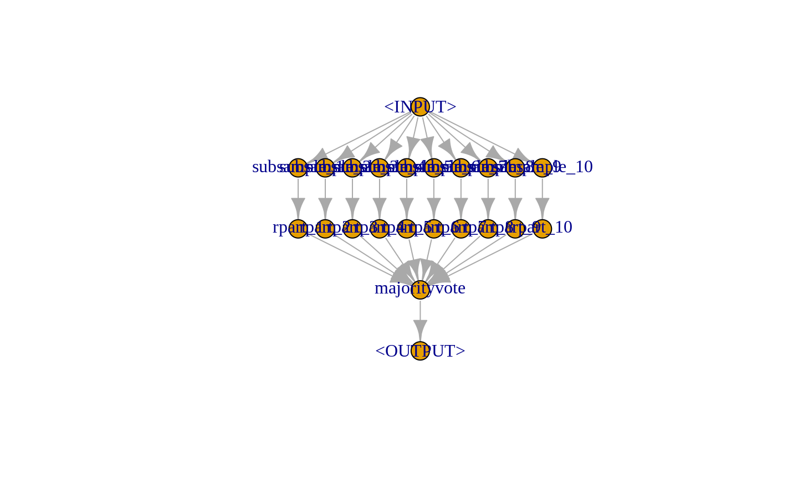
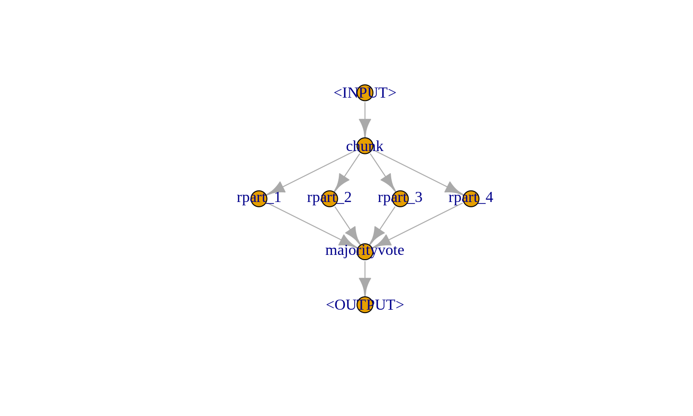

vignettes/stacking_and_bagging.Rmd
Leveraging the different operations available to connect PipeOps to very powerfull graphs. This vignette introduces two such well-known graph structures, that allow us to enhance single learners to more powerfull combinations.
Before we go into details, we split the task into train and test indices.
library(mlr3)
library(mlr3pipelines)
task = mlr_tasks$get("iris")
train.idx = sample(seq_len(task$nrow), 120)
test.idx = setdiff(seq_len(task$nrow), train.idx)We first examine Bagging introduced by Breimann (1994). The basic idea is to create multiple predictors and then aggregate those to a single, more powerfull predictor. > “… multiple versions are formed > by making bootstrap replicates of the learning set > and using these as new learning sets” (Breimann 1994)
Bagging then aggregates a set of predictors by averaging (regression) or majority vote (classification). The idea behind bagging is, that a set of weak, but different predictors can be combined in order to arrive at a single, better predictor.
We can achieve this by downsampling our data before training a learner, repeating this for say \(10\) times and then performing a majority vote on the predictions.
First, we create a simple pipeline, that uses PipeOpSubsample before a PipeOpLearner is trained:
We can now repeat this \(10\) times using greplicate.
In order to visually inspect the resulting graph, we can plot it:
Afterwards we need to aggregate the 10 pipelines to form a single model:
and plot again to see what happens:

This pipeline can again be used in conjunction with GraphLearner in order for Bagging to be used like a [mlr3::Learner].
baglrn = GraphLearner$new(bagging)
e = Experiment$new(task = task, learner = baglrn)
e$train(train.idx)
#> INFO [mlr3] Training learner 'subsample_1.subsample_2.subsample_3.subsample_4.subsample_5.subsample_6.subsample_7.subsample_8.subsample_9.subsample_10.rpart_1.rpart_2.rpart_3.rpart_4.rpart_5.rpart_6.rpart_7.rpart_8.rpart_9.rpart_10.majorityvote' on task 'iris' ...
#> <Experiment> [trained]:
#> + Task: iris
#> + Learner: subsample_1.subsample_2.subsample_3.subsample_4.subsample_5.subsample_6.subsample_7.subsample_8.subsample_9.subsample_10.rpart_1.rpart_2.rpart_3.rpart_4.rpart_5.rpart_6.rpart_7.rpart_8.rpart_9.rpart_10.majorityvote
#> + Model: [Graph]
#> - Predictions: [missing]
#> - Performance: [missing]
#>
#> Public: clone(), ctrl, data, has_errors, hash, learner, log(),
#> model, performance, predict(), prediction, score(), seeds,
#> state, task, test_set, timings, train_set, train(),
#> validation_set
e$predict(test.idx)
#> INFO [mlr3] Predicting with model of learner 'subsample_1.subsample_2.subsample_3.subsample_4.subsample_5.subsample_6.subsample_7.subsample_8.subsample_9.subsample_10.rpart_1.rpart_2.rpart_3.rpart_4.rpart_5.rpart_6.rpart_7.rpart_8.rpart_9.rpart_10.majorityvote' on task 'iris' ...
#> <Experiment> [predicted]:
#> + Task: iris
#> + Learner: subsample_1.subsample_2.subsample_3.subsample_4.subsample_5.subsample_6.subsample_7.subsample_8.subsample_9.subsample_10.rpart_1.rpart_2.rpart_3.rpart_4.rpart_5.rpart_6.rpart_7.rpart_8.rpart_9.rpart_10.majorityvote
#> + Model: [Graph]
#> + Predictions: [PredictionClassif]
#> - Performance: [missing]
#>
#> Public: clone(), ctrl, data, has_errors, hash, learner, log(),
#> model, performance, predict(), prediction, score(), seeds,
#> state, task, test_set, timings, train_set, train(),
#> validation_setIn conjunction with different Backends, this can be a very powerful tool, as in cases, where the data does not fully fit in memory, we can easily just obtain a fraction of the data for each learner from a DataBaseBackend and then aggregate predictions from all learners.
Stacking is another technique that can improve model performance. The basic idea behind stacking is, that using predictions from one model as features of a subsequent model can possibly improve performance.
A very simple possibility would be to train a decision tree and use the predictions from this model in conjunction with the original features in order to train an additional model on top. The basic idea behind this is, that patterns a model detected in the data can be used by a higher level model, and thus result in a better performance.
In order to limit overfitting, we additionally do not predict on the original predictions of the learner, but instead on out-of-bag predictions. This is automatically done by PipeOpLearnerCV.
We first create a level 0 learner, which is used to extract a lower level prediction. We additionally clone() the learner object to obtain a copy of the learner, and set a custom id for the PipeOp.
lrn = mlr_learners$get("classif.rpart")
lrn_0 = PipeOpLearnerCV$new(lrn$clone())
lrn_0$id = "rpart_cv"Additionally, we use a PipeOpNULL in parallel to the level 0 learner, in order to send the unchanged Task to the next level.
Afterwards, we want to concatenate the predictions from PipeOpLearnerCV and the original Task using PipeOpFeatureUnion.
We can now train another learner on top of the combined features.
stacklrn = GraphLearner$new(stack)
e = Experiment$new(task = task, learner = stacklrn)
e$train(train.idx)
#> INFO [mlr3] Training learner 'rpart_cv.null.featureunion.rpart' on task 'iris' ...
#> INFO [mlr3] Running learner 'rpart' on task 'iris' (iteration 1/3)'
#> INFO [mlr3] Running learner 'rpart' on task 'iris' (iteration 2/3)'
#> INFO [mlr3] Running learner 'rpart' on task 'iris' (iteration 3/3)'
#> <Experiment> [trained]:
#> + Task: iris
#> + Learner: rpart_cv.null.featureunion.rpart
#> + Model: [Graph]
#> - Predictions: [missing]
#> - Performance: [missing]
#>
#> Public: clone(), ctrl, data, has_errors, hash, learner, log(),
#> model, performance, predict(), prediction, score(), seeds,
#> state, task, test_set, timings, train_set, train(),
#> validation_set
e$predict(test.idx)
#> INFO [mlr3] Predicting with model of learner 'rpart_cv.null.featureunion.rpart' on task 'iris' ...
#> <Experiment> [predicted]:
#> + Task: iris
#> + Learner: rpart_cv.null.featureunion.rpart
#> + Model: [Graph]
#> + Predictions: [PredictionClassif]
#> - Performance: [missing]
#>
#> Public: clone(), ctrl, data, has_errors, hash, learner, log(),
#> model, performance, predict(), prediction, score(), seeds,
#> state, task, test_set, timings, train_set, train(),
#> validation_setIn this vignette, we only showcase a very simple usecase for stacking. In many real-world applications, stacking is done for multiple levels and on multiple representations of the dataset. On a lower level, different preprocessing methods can for example be defined in conjunction with several learners. On a higher level, we can then combine those predictions in order to form a very powerfull model.
In order to showcase the power of mlr3pipelines, we will quickly introduce a more complicated stacking example.
In this case, we train a glmnet and 2 different rpart models (some transform its inputs using PipeOpPCA) on our task in the level 0 and concatenate them with the original features (via PipeOpNull). This is then passed on to level 1, where we copy the concatenated features \(3\) times and put this task into a rpart and a glmnet model. Additionally, we also keep a version of the level 0 output (via PipeOpNull) and pass this on to level 2. In level 2 we simply concatenate all level 1 outputs and train a final decision tree.
library(mlr3learners)
rprt = mlr_learners$get("classif.rpart")
rprt$predict_type = "prob"
glmn = mlr_learners$get("classif.glmnet")
glmn$predict_type = "prob"
# Create Learner CV Operators
lrn_0 = PipeOpLearnerCV$new(rprt, id = "rpart_cv_1")
lrn_0$values$maxdepth = 5L
lrn_1 = PipeOpPCA$new(id = "pca1") %>>% PipeOpLearnerCV$new(rprt, id = "rpart_cv_2")
lrn_1$values$maxdepth = 1L
lrn_2 = PipeOpPCA$new(id = "pca2") %>>% PipeOpLearnerCV$new(glmn)
# Union them with a PipeOpNULL to keep original features
level_0 = gunion(list(lrn_0, lrn_1,lrn_2, PipeOpNULL$new(id = "NULL1")))
# Cbind the output 3 times, train 2 learners but also keep level
# 0 predictions
level_1 = level_0 %>>%
PipeOpFeatureUnion$new(4) %>>%
PipeOpCopy$new(3) %>>%
gunion(list(
PipeOpLearnerCV$new(rprt, id = "rpart_cv_l1"),
PipeOpLearnerCV$new(glmn, id = "glmnt_cv_l1"),
PipeOpNULL$new(id = "NULL_l1")
))
# Cbind predicitions, train a final learner.
level_2 = level_1 %>>%
PipeOpFeatureUnion$new(3, id = "u2") %>>%
PipeOpLearner$new(rprt,
id = "rpart_l2")
# Plot the resulting graph
level_2$plot()
e = Experiment$new(
task = mlr_tasks$get("iris"),
learner = GraphLearner$new(level_2)
)
e$train(train.idx)
e$predict(test.idx)
e$score()
e$performanceIn cases, where data is too big to fit into the machines memory, an often-used technique is to split the data into several parts, train on each part of the data and afterwards aggregate the models. In this example, we split our data into \(4\) parts using PipeOpChunk. Additionally, we create \(4\) PipeOpLearner PipeOps, which are then trained on each split of the data.
chks = PipeOpChunk$new(4)
lrns = greplicate(PipeOpLearner$new(mlr_learners$get("classif.rpart")), 4)Afterwards we can use PipeOpMajorityVote to aggregate the predictions from a the 4 different models into a new one.
We can now connect the different operators and visualize the full graph:

pipelrn = GraphLearner$new(pipeline)
e = Experiment$new(task = task, learner = pipelrn)
e$train(train.idx)
#> INFO [mlr3] Training learner 'chunk.rpart_1.rpart_2.rpart_3.rpart_4.majorityvote' on task 'iris' ...
#> <Experiment> [trained]:
#> + Task: iris
#> + Learner: chunk.rpart_1.rpart_2.rpart_3.rpart_4.majorityvote
#> + Model: [Graph]
#> - Predictions: [missing]
#> - Performance: [missing]
#>
#> Public: clone(), ctrl, data, has_errors, hash, learner, log(),
#> model, performance, predict(), prediction, score(), seeds,
#> state, task, test_set, timings, train_set, train(),
#> validation_set
e$predict(test.idx)
#> INFO [mlr3] Predicting with model of learner 'chunk.rpart_1.rpart_2.rpart_3.rpart_4.majorityvote' on task 'iris' ...
#> <Experiment> [predicted]:
#> + Task: iris
#> + Learner: chunk.rpart_1.rpart_2.rpart_3.rpart_4.majorityvote
#> + Model: [Graph]
#> + Predictions: [PredictionClassif]
#> - Performance: [missing]
#>
#> Public: clone(), ctrl, data, has_errors, hash, learner, log(),
#> model, performance, predict(), prediction, score(), seeds,
#> state, task, test_set, timings, train_set, train(),
#> validation_set
e$score()
#> INFO [mlr3] Scoring predictions of learner 'chunk.rpart_1.rpart_2.rpart_3.rpart_4.majorityvote' on task 'iris' ...
#> <Experiment> [scored]:
#> + Task: iris
#> + Learner: chunk.rpart_1.rpart_2.rpart_3.rpart_4.majorityvote
#> + Model: [Graph]
#> + Predictions: [PredictionClassif]
#> + Performance: classif.mmce=0.03333333
#>
#> Public: clone(), ctrl, data, has_errors, hash, learner, log(),
#> model, performance, predict(), prediction, score(), seeds,
#> state, task, test_set, timings, train_set, train(),
#> validation_set